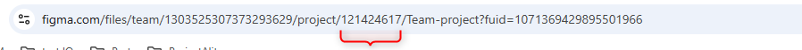
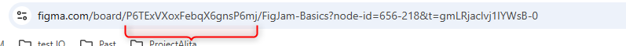
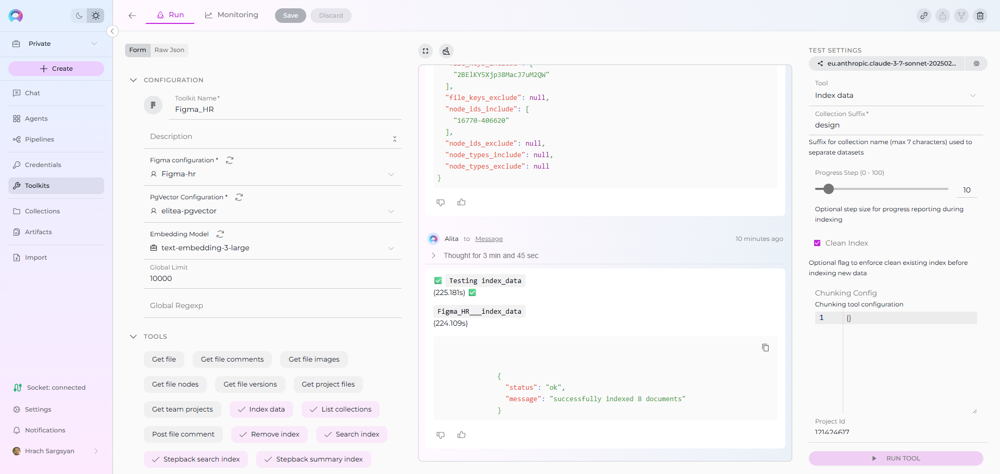
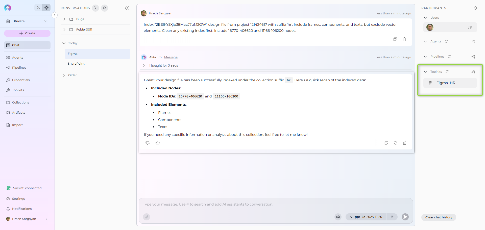
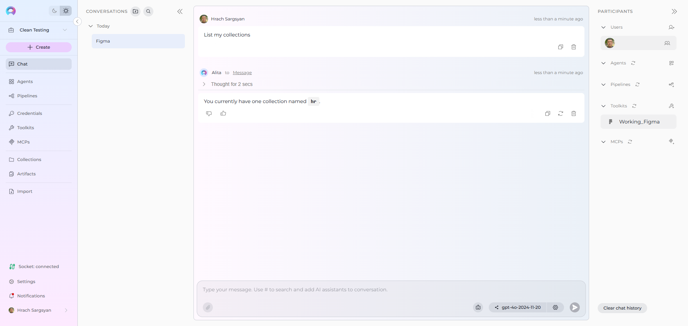
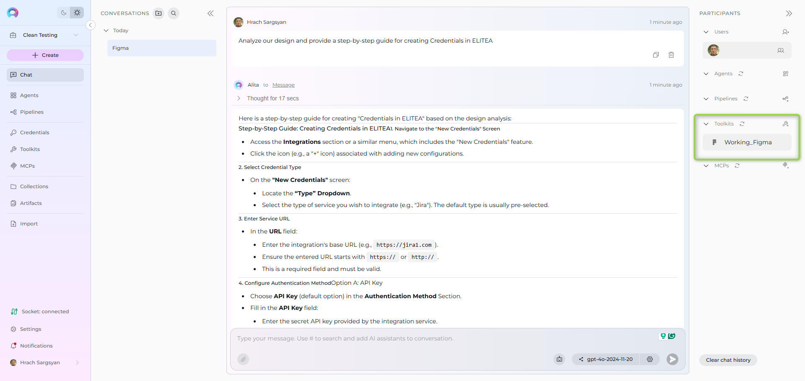
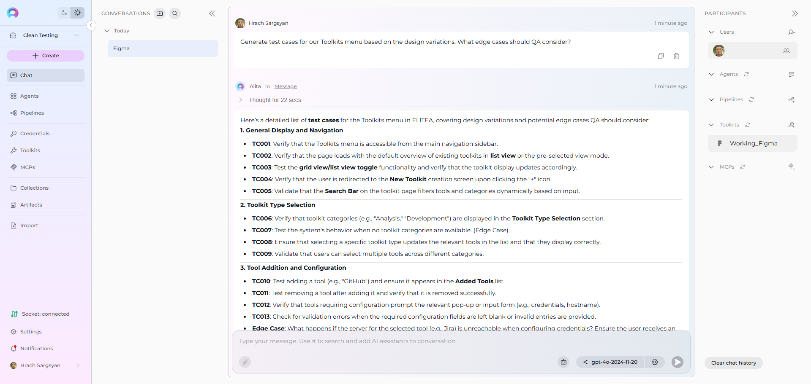

Index Figma Data¶
Availability
Indexing tools are available in the Next environment (Release 1.7.0) and replace legacy Datasources/Datasets. For context, see Release Notes 1.7.0 and the Indexing Overview.
This guide provides a complete step-by-step walkthrough for indexing Figma data and then searching or chatting with the indexed content using ELITEA's AI-powered tools.
Overview¶
Figma indexing allows you to create searchable indexes from your Figma design collaboration and UI/UX content:
- Design Files: Complete Figma files with all design elements, components, and layouts
- Frames & Pages: Individual screens, artboards, and design layouts within files
- Components & Instances: Reusable design components and their instances across projects
- Design Elements: UI elements like buttons, forms, icons, and interactive components
- Project Organization: Team projects, file structures, and design system hierarchies
What you can do with indexed Figma data:
- Design Search: Find specific design patterns, components, or screens across your design system
- Context-Aware Design Chat: Get AI-generated answers about design decisions and patterns with references to specific files
- Cross-Project Discovery: Search for design elements and patterns across multiple Figma projects
- Design System Analysis: Analyze component usage, design consistency, and UI patterns
- Component Documentation: Extract insights about design components and their usage patterns
Common use cases:
- Finding specific design components or patterns across your design system for reuse
- Onboarding new designers by allowing them to ask questions about design standards and components
- Analyzing design consistency and identifying opportunities for component standardization
- Product teams searching for specific UI patterns and design decisions
- Design system managers extracting insights about component adoption and usage
Prerequisites¶
Before indexing Figma data, ensure you have:
- Figma Credential: A Figma Personal Access Token or authentication credentials configured in ELITEA
- Vector Storage: PgVector selected in Settings → AI Configuration
- Embedding Model: Selected in AI Configuration (defaults available) → AI Configuration
- Figma Toolkit: Configured with your Figma authentication and project details
Required Permissions¶
Your Figma credential needs appropriate permissions based on what you want to index:
For Content Access:
- Read access to Figma files and projects
- Permission to view the specific teams and projects you want to index
For Comprehensive Indexing:
- Access to view file content, components, and design elements
- Permission to access both public and team-restricted files (based on your requirements)
- Ability to read from multiple projects and team spaces
Authentication Methods:
- Personal Access Token: Figma API token (starts with
figd_) - OAuth2: OAuth2 token for application-specific access
Step-by-Step: Creating a Figma Credential¶
- Generate Figma Personal Access Token in your Figma account (Settings → Security → Personal Access Tokens)
- Create Credential in ELITEA: Navigate to Credentials → + Create → Figma → enter details and save
Detailed Instructions
For complete credential setup steps including token generation and security best practices, see:
Step-by-Step: Configure Figma Toolkit¶
- Create Toolkit: Navigate to Toolkits → + Create → Figma
- Configure Settings: Set authentication method and assign your Figma credential
- Enable Tools: Select
Index Data,List Collections,Search Index,Stepback Search Index,Stepback Summary Index, andRemove Indextools - Save Configuration
Tool Overview:¶
- Index Data: Creates searchable indexes from Figma files and design content
- List Collections: Lists all available collections/indexes to verify what's been indexed
- Search Index: Performs semantic search across indexed content using natural language queries
- Stepback Search Index: Advanced search that breaks down complex questions into simpler parts for better results
- Stepback Summary Index: Generates summaries and insights from search results across indexed content
- Remove Index: Deletes existing collections/indexes when you need to clean up or start fresh
Detailed Instructions
For complete toolkit configuration including authentication setup and access permissions, see:
Finding Required Figma IDs¶
Before indexing, you'll need to identify the specific Figma resources you want to index. Here's how to find the required IDs:
Project ID¶
For tools that require a Project ID, you can obtain it in the following ways:
-
From Project URL (If You Are Project Admin) - Web & Desktop:
-
Web: Extract from project URL:
https://www.figma.com/files/project/[PROJECT_ID]/[PROJECT_NAME] -
Desktop: Use File → Show in browser or Share → copy project link, then extract from project URL
-
-
Request from Project Administrator: If you don't have admin access to the project, contact the project administrator or team owner to provide you with the Project ID.

Project ID Usage Note
Providing Project ID for indexing is optional. It's generally better to use File Keys for targeted indexing instead, because projects may contain many files which could result in large indexes. Use Project ID only when you specifically need to index all files in a project or create comprehensive project-level indexes.
File Key¶
- Web: Extract from file URL:
https://www.figma.com/file/[FILE_KEY]/[FILE_NAME] - Desktop: Use File → Copy link or Share button, then extract from URL

Node IDs¶
- Web: Right-click any design element → Copy link → extract from URL parameter
node-id=[NODE_ID] - Desktop: Right-click element → Copy link or select multiple elements (Ctrl/Cmd) → Copy link, then extract from URL

ID Format
- Project ID: Numeric (e.g.,
123456789) - File Key: Alphanumeric string (e.g.,
ABC123DEF456) - Node ID: Colon-separated format (e.g.,
123:456)
Detailed ID Finding Instructions
For comprehensive step-by-step instructions including additional methods and troubleshooting tips, see the Figma Key Parameters section in the Figma Integration Guide.
Step-by-Step: Index Figma Data¶
Content Indexing (from Toolkit)¶
-
Open Toolkit Test Settings:
- Navigate to your Figma toolkit's detail page
- In the Test Settings panel (right side), select a model (e.g.,
gpt-4o)
-
Configure Index Data Tool:
- From the tool dropdown, select "Index Data"
- Configure the following parameters:
Parameter Description Example Value Collection Suffix * Suffix for collection name (required) designsoruiProgress Step (0 - 100) Step size for progress reporting during indexing 10or25Clean Index Remove existing index data before re-indexing ✓ (checked) or ✗ (unchecked) Chunking Config Configuration for document chunking Default or custom settings Chunking Tool Method for splitting content into chunks markdown(default)Project Id ID of the project to list files from 55391681File Keys Include List of file keys to include if Project Id not provided ["Fp24FuzPwH0L74ODSrCnQo"]File Keys Exclude List of file keys to exclude from indexing ["OldDesignFile123"]Node Ids Include List of top-level nodes (pages) to include ["123-56", "7651-9230"]Node Ids Exclude List of top-level nodes (pages) to exclude ["Archive-Page"]Node Types Include List of node types to include ["FRAME", "COMPONENT"]Node Types Exclude List of node types to exclude ["VECTOR", "RECTANGLE"] -
Run Figma Indexing:
- Click "Run Tool"
- Wait for completion (may take several minutes for large projects with many files)
- Check the output for success confirmation or error messages

Verification: Confirm Index Success¶
After indexing completes, verify the index was created successfully:
Method 1: Using Test Settings (Technical Verification)¶
-
Use List Collections Tool:
- In Test Settings, select "List Collections" tool
- Run tool to see all available collections
- Look for your collection with the specified suffix
-
Test Basic Search:
- Select "Search Index" tool
- Query: e.g.,
login screen design button - Collection Suffix: Your specified suffix
- Run tool and verify relevant results are returned
Search and Chat with Indexed Data¶
Once your Figma data is indexed, you can use the toolkit to search and interact with your content in multiple ways:
Using Toolkit in Conversations and Agents¶
Your Figma toolkit can be used in two main contexts:
- In Conversations: Add the toolkit as a participant to ask questions and search your indexed Figma data
- In Agents: Include the toolkit when creating AI agents to give them access to your design data
How to use:
- Start a New Conversation or Create an Agent
- Add Toolkit as Participant: Select your Figma toolkit from the available toolkits
- Ask Natural Language Questions: The toolkit will automatically search your indexed data and provide relevant answers with citations
Real-Life Example Workflow¶
Let's walk through a complete example of indexing and using a design team's Figma project:
Step 1: Setup Figma Toolkit for Design Project
Step 2: Use in Conversations
Add toolkit to a conversation and start asking questions:
- Navigate to Conversations → + New Conversation
- In the participants section click + to add Toolkit
- Select your Figma toolkit from the available toolkits list
Step 3: Index the Design Project
-
User Request in Chat:
"Index "2BElKY5Xjp38MacJ7uM2QW" design file from project 121424617 with suffix 'hr'. Include frames, components, and texts, but exclude vector elements. Clean any existing index first. Include 16770-406620 and 11166-106200 nodes."

Step 4: Verify Index Creation
-
User Request in Chat:
"List my collections"
-
Figma Toolkit Response:

This confirms the indexing completed successfully and your design collection is available for searching.
Step 5: Start the conversation and begin asking questions about your indexed content
-
User Request: "Analyze our design system and provide a step-by-step guide for creating Credentials in ELITEA."
-
Figma Toolkit: "Based on your indexed design files, here's a comprehensive guide for creating ELITEA credentials and analyzing your design system:
ELITEA Credential Creation Steps:
- Navigate to Credentials: Go to ELITEA → Credentials → + Create → Select Figma
- Enter Token Information: Paste your Figma Personal Access Token (starts with 'figd_')
- Credential Configuration: Set name, description, and save the credential for toolkit usage
- Assign to Toolkit: Link the credential to your Figma toolkit in toolkit settings
Design System Analysis:
- Component Library: Your design system contains 45 reusable components with consistent naming conventions
- Design Tokens: Color palette follows brand guidelines with primary (#0066CC) and secondary (#00CC66) colors
- Typography: Standardized font scales and spacing using 8px grid system
Sources: Design_System_Guide.fig (Component: TokenLibrary), Team_Standards.fig (Frame: CredentialSetup)"

-
User Request: "Generate test cases for our Toolkits menu based on the design variations. What edge cases should QA consider?"
-
Figma Toolkit: "Based on your indexed design files, here's a detailed list of test cases for the Toolkits menu in ELITEA, covering design variations and potential edge cases QA should consider:
1. General Display and Navigation
- TC001: Verify that the Toolkits menu is accessible from the main navigation sidebar
- TC002: Verify that the page loads with the default overview of existing toolkits in list view or the pre-selected view mode
2. Toolkit Type Selection
- TC006: Verify that toolkit categories (e.g., 'Analysis,' 'Development') are displayed in the Toolkit Type Selection section
- TC007: Test the system's behavior when no toolkit categories are available (Edge Case)
3. Tool Addition and Configuration
- TC010: Test adding a tool (e.g., 'GitHub') and ensure it appears in the Added Tools list
- TC011: Test removing a tool after adding it and verify that it is removed successfully
Sources: Toolkits_Menu_Design.fig (Pages: MainView, CreationFlow), ELITEA_Navigation.fig (Frame: SidebarMenu)"

Troubleshooting & Tips¶
Common Errors and Solutions¶
"Authentication failed" or "Unauthorized access":
- Verify your Figma credential has the correct Personal Access Token (starts with
figd_) - Ensure your token has not expired in your Figma account settings
- Check that your Figma account has access to the projects and files you want to index
- Verify the token was copied correctly without extra spaces or characters
"No files found" or "Project not accessible":
- Verify the Project ID is correct and accessible to your Figma account
- Ensure your account has permission to view the specific project and its files
- Check that the project exists and has not been deleted or archived
- Confirm your token's associated account is a member of the team that owns the project
"File keys not found" or "Invalid file keys":
- Check that the file keys are copied correctly from Figma URLs (case-sensitive)
- Ensure the files exist and are accessible to your account
- Verify file sharing settings allow API access if using publicly shared files
- Try indexing with Project ID instead of specific file keys for broader access
"Vector database connection failed" or "PgVector errors":
- Ensure PgVector is properly configured in Settings → AI Configuration
- Verify the vector database is running and accessible
- Check connection credentials and database permissions
- Restart the vector database service if connection issues persist
"No design elements indexed" or "Empty results":
- Check that Node Types filters are not excluding all content
- Verify the Figma files contain the specified node types (FRAME, COMPONENT, etc.)
- Try indexing without node type filters first, then add restrictions
- Ensure the design files have proper structure and named elements
Performance and Scope Considerations¶
For Large Design Projects:
- Use specific file filters:
File Keys Includefor targeted indexing - Filter by node types: include only
["FRAME", "COMPONENT"]for key design elements - Set reasonable progress steps: start with 25 for large projects
- Consider indexing by project phase: current designs vs. archived files
Search Result Quality¶
If search returns few/no results:
- Lower the cut-off score from 0.5 to 0.35 or 0.3
- Increase search_top from 10 to 20 or 30
- Try rephrasing your query with design-specific terms (component names, screen types)
- Verify the indexed content contains relevant design information for your query
For better search quality:
- Include both frames and components for comprehensive coverage
- Use natural language queries rather than exact file names
- Leverage stepback search for complex design questions that require reasoning
- Create separate indexes for different design types (mobile vs. web, current vs. archived)
Content-Specific Indexing Tips¶
For Design Systems:
- Focus on components: include
["COMPONENT", "COMPONENT_SET"]node types - Index component libraries and design tokens for comprehensive coverage
- Include both current and deprecated components for historical context
For Product Design:
- Include frames and screens:
["FRAME"]for screen-level designs - Index across multiple product areas for cross-feature insights
- Consider including prototyping and interaction states
For UI/UX Research:
- Include wireframes and user flow designs
- Index research artifacts and design explorations
- Focus on user-centered design elements and patterns
References¶
Related Documentation
For additional information and detailed setup instructions, see:
- Indexing Overview - General indexing concepts and features
- Create a Credential - Step-by-step credential creation guide
- How to Use Credentials - Credential management and Figma setup
- Toolkits Menu - Toolkit configuration and management
- Figma Toolkit Integration Guide - Complete Figma toolkit reference
- AI Configuration - Vector storage and embedding model setup
- Chat Menu - Creating conversations and adding toolkit participants